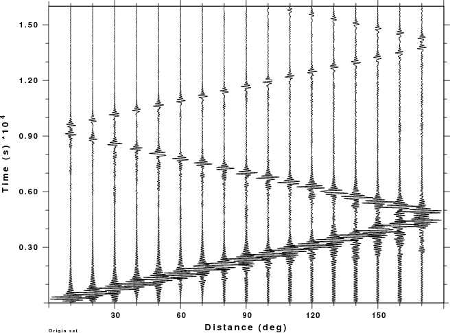

Mineos - CPS Earth flattening comparison
The purpose of this presentation is to compare mineos normal mode
synthetics to the Computer Program in Seismology codes that use an
Earth flattening approximation to construct synthetics
Installing Mineos
Mineos is obtained from the Computational Infrastructure of Geodynamics
web site: (mineos
download). One line of the distribution code was modified to permit
compilation using the gfortran compiler. The unofficial distribution, with the
source code fix in minos_bran.f
is given in the tar-ball MINEOS.tgz.
To
install mineos and the scripts used for testing th CPS codes, do the
following:
cd (Directory where you want this
installed)
gunzip -c MINEOS.tgz | tar xvf -
cd MINEOS
./DOIT
You will now have compiled the programs, which are placed in the newly
created bin directory.
You will find PDF documentation of the package in the file mineos-1.0.0.rbh/doc/mineos.pdf .
You will also find an
abreviated
DEMO package in mineos-1.0.0.rbh/DEMO/DEMO.tar.gz.
Modifications to the distribution:
mineos-1.0.0.rbh/utils:
Changed the cucss2sac.h sac
header fields from long to int. This was done in typedef struct sac and in the SAC_HD *read_sac prototype.
Why? This definition of
the SAC header is a dreg from 16 bit
processors. Using the long
will be invalid for a 64 bit machine unless the -w32 compiler flag is
used. Note I did not correct the incorrect time stamp, e.g., try a time
1 second before January 1, 1970. I also did not correct for the
fact that DEPMAX and DEPMIN are not based on data but on the first two
samples of the time series!
mineos-1.0.0.rbh:
minos_bran.f
would
not pass the gfortran compiler. The reason is
the instance of
dimension
x(20),det(20),qx(3,20),wrk(60),wt(*),ichar(4)
data tol/1.d-9/,itmax/15/,ichar/' s','
t',' s',' c'/
which was changed to
dimension
x(20),det(20),qx(3,20),wrk(60),wt(*),kchar(4)
character*2 kchar
data tol/1.d-9/,itmax/15/,kchar/' s','
t',' s',' c'/
BECAUSE:
1. ichar is a reserved
function in FORTRAN90
2. ichar was not defined as
a character string. This part of the code is really FORTRAN66!
syndat.f did not
have the
required read to define the output field. I added (in caps with
neighboring lines)
read(*,'(a256)') dbout
write(*,*) dbout(1:lnblnk(dbout))
c-----
c CORRECTION RBH
c-----
WRITE(*,*)
'Enter output units: 0 [nm/s/s] 1 [nm/s] 2 [nm]'
READ(*,*)idout
c
c read source and moment
c
Note also that the source code does not agree with the
documentation. The source code wants the following input:
write(*,*)
'============== Program syndat =================='
write(*,*) 'enter input CMT file name:'
read(*,'(a256)') fname1
write(*,*) fname1(1:lnblnk(fname1))
c.... setup tensor type: moment/Mo,nodal2/Mo,nodal2
write(*,*) 'enter tensor type: 0 -
moment, ',
* '1 - nodal plane 1,
2 - nodal plane 2'
read(*,*) itptens
write(*,*) itptens
c.... i/o database name
write(*,*) 'enter input dbname'
read(*,'(a256)') dbin
write(*,*) dbin(1:lnblnk(dbin))
write(*,*) 'enter output dbname'
read(*,'(a256)') dbout
write(*,*) dbout(1:lnblnk(dbout))
c-----
c CORRECTION RBH
c-----
WRITE(*,*) 'Enter output units: 0
[nm/s/s] 1 [nm/s] 2 [nm]'
READ(*,*)idout
The manual says
cmt_event -
TRUE
in_dbname These two are reversed from the
source code
plane
out_dbname
TRUE
datatype TRUE
Simple Mineos Run
The first example:
cd
share/mineos/nDEMO5
DOIT
The DOIT script runs a variant of the RUN_MINEOS.sh, called DOEGN,
which get the free oscillation frequencies and eigenfunctions for my
version of AK135-f. Only the spheroidal and toroidal modes are
computed. The Radial mode is not computed. The script DOIT
#!/bin/sh
#####
# compute the free oscillation frequencies and the eigenfunctions
#####
DOEGN tak135-f
#####
# now compute the synthetics for a specific moment tensor that represents
# the following cases
#
# Source STK DIP RAKE Mw [M0(dyne-cm)] Src-Rec Az
# DS 45 90 90 2.6 [1.0E+20] 0
# SS 22.5 90 0 2.6 [1.0E+20] 0
# DD 45 45 90 2.6 [1.0E+20] 0
# EX Center of expansion 2.6 [1.0E+20] 0
#####
DOSYNSS
DOSYNDS
DOSYNDD
DOSYNEX
Then computes SAC files for the given mechanism, moment and station
azimuth. The output of the MINEOS package are ground acceleration in
units of nm/s/s. To be able
to comapre them to the Compute Program in Seismology synthetics, we
must integrate and then convert to other units. This will be done later
by the script DOPOPULATEMIN.
The script creates synthetic ground
accelerations for each source for distances of 10 to 170 degrees for
source depths of 10, 100 and 700 km.
The synthetics are in the directories with names, such as SS_Syndat_700
for the SS source and 700 km source depth. The output of the gsac command to plot the LHT
synthetics for the SS source for a 10 km depth are
gsac << EOF
r SS_Syndat_010/*LHT.SAC
bg plt
prs gcarc
plotnps -F7 -W10 -EPS -K < PRS001.PLT > prs001.eps
quit
EOF
is
